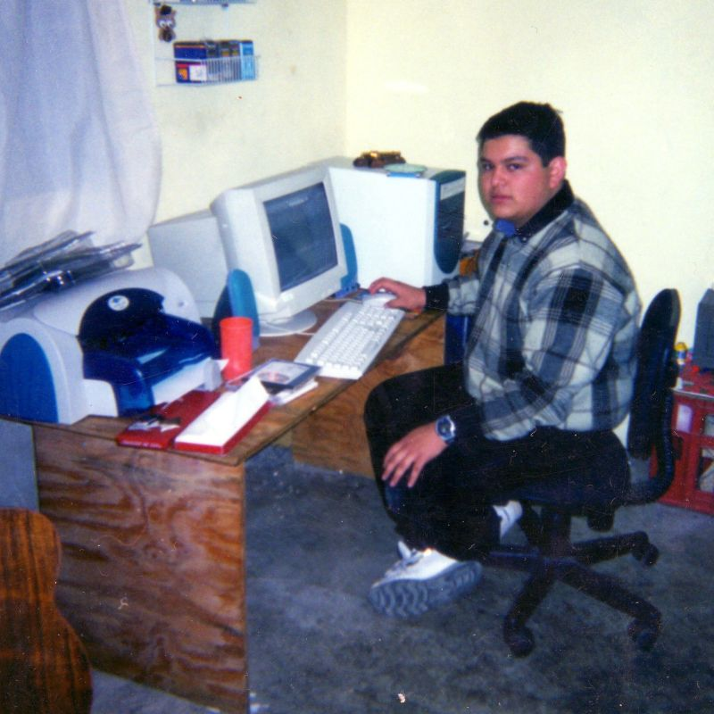
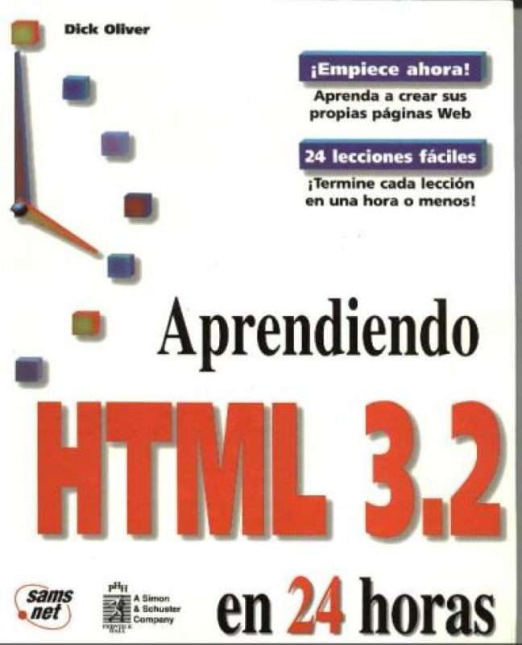
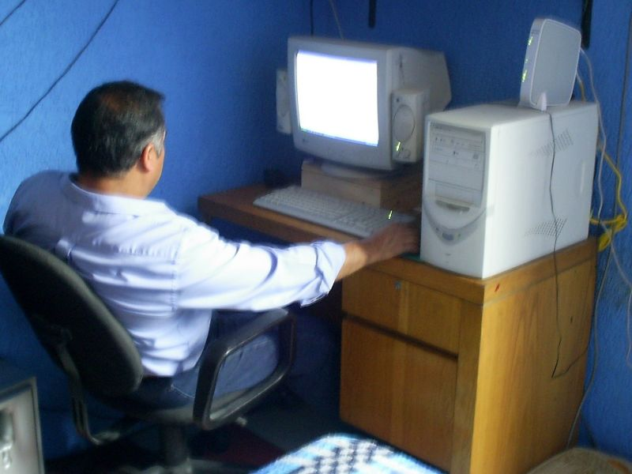
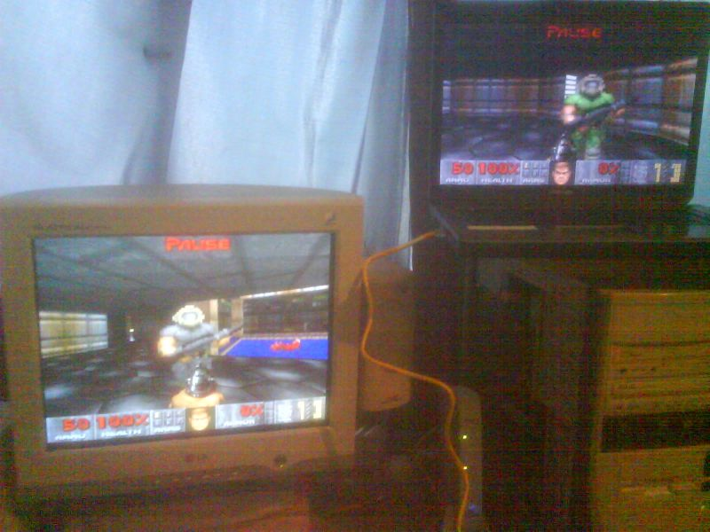
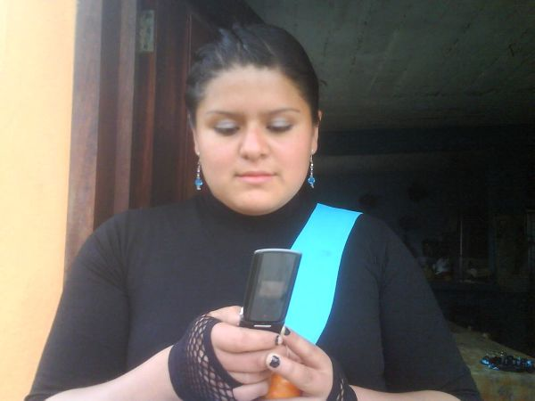
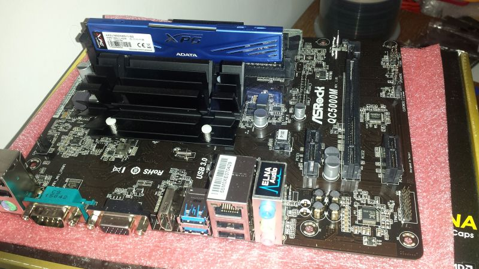
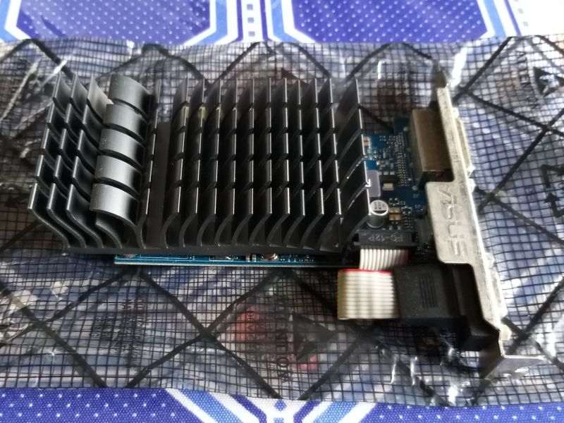

Informática
17 de Agosto, 2025
Era realmente genial la época en la que tenía tiempo suficiente para sumergirme en los videojuegos.
No tenía ninguna preocupación mas que seguir avanzando en alguna de esas historias. Me parece que
podría definir con claridad la época en la que más disfruté de ese pasatiempo. Fue desde mi entrada
al CCH al rededor del año 2001, hasta que me vine a vivir acá con Pá en el año 2008. Pero empezaré por el
principio.
Mi primera PC
Aunque ya llevaba años siendo un asiduo videojugador, mi época en el CCH, me dio la libertad de jugar
un poco de todo, además de poder destinar el tiempo que quisiera para jugar. La computadora verde que tuve en aquél entonces, fue la que
me permitió experimentar muchos videojuegos, que ya poco o nada tenían que ver con lo que estábamos acostumbrados
en las consolas, fueran de sobremesa o portátiles.
Hasta ese momento sólo había jugado juegos de Nintendo y uno que otro de MS-DOS. Pero con esa computadora
conocí todo tipo de juegos, tanto de PC como de Play Station gracias a los primeros emuladores que encontré en internet.
No me acuerdo específicamente de todos sus componentes, pero sí puedo recordar que su procesador era un K6 de AMD
con una velocidad de 500 Mhz, 64 MB de RAM, y un chip gráfico que podía configurar entre 8, 16 y 32 MB de memoria para video.
Cuando descubrí que mediante el BIOS podía manipular algunas opciones para mejorar el rendimiento, subí la memoria de video, de 8 a 16 MB.
Entonces empezaron a ejecutarse mejor los juegos. De hecho cuando conseguí un módulo adicional de RAM de 32 MB (no sé de dónde), pude
subir la memoria de video hasta los 32 MB. Lo cual fue genial porque pude acceder a más juegos que antes no corrían.
Pero aprendí una valiosa lección el día que decidí tocar la frecuencia del procesador. La subí hasta los 550 Mhz con la esperanza de que esa
velocidad extra se reflejara en un mejor rendimiento en juegos. Y así fué, hubo una notable mejoría, pero no duró mucho.
A los dos días la computadora se apagó y ya no volvió a encender. Yo no entendía por qué, y por más que le buscaba
no podía encontrar la causa. Contacté a Fernando, el amigo de Paco, se llevó la computadora, y poco después me contactó para
decirme que se había quemado el procesador, y que iba a necesitar otro. Ya no recuerdo quien pagó por esa compostura, si
Tavo, Paco o Chepo, pero me parece que fue Tavo.
En fin, le pusieron un procesador más potente, me parece que ya era uno con 700 Mhz de velocidad, así que volví a las andadas
pero esta vez, con mucho más cuidado.

Un tiempo sin computadora
27 de Noviembre, 2025
Desde que dejé de vivir en casa de Mima, pasé un tiempo sin computadora.
Iba constantemente a los laboratorios de computo del CCH a experimaentar
todo lo que iba aprendiendo, desde programación en Turbo Pascal, hasta
diseño web en HTML. Fue esa época en la que dejé mi interés en la medicina
y me enamoré totalmente de la informática. Me encantaba la calse de
cibernética y computación, ahi aprendí las bases de la computación
y de la programación, hice verdaderas maravillas con Turbo Pascal, de
hecho hasta el maestro me pidió mi diskette con mis programas para
mostrarlos a otros grupos. Tenía un respaldo de todos mis programas
en diskettes, pero con el tiempo se fueron dañando y ya no los tengo.
Como no tenía computadora, me dediqué por completo a aprender. Me pasaba las horas leyendo
un libro de HTML que saqué tantas veces de la biblioteca del CCH que al final
me memoricé un montón de capítulos. Hasta lo fotocopié casi entero, y todavía
tengo guardadas esas copias. Iba apuntando en un cuaderno todos los códigos que aprendía.
Todavía lo conservo, lleno de apuntes y diseños para una página web personal.
También me quedaron los archivos, y lo mejor es que ¡hasta hoy funcionan en un navegador moderno!
Todo esto pasó antes de que existiera el CSS. Ahora, muchas de las cosas que aprendí de ese libro
ya no se usan. Se llamaba 'Aprendiendo HTML 3.2 en 24 horas', de Dick Oliver.

Aprendí mucho en esa época, y vivia esperando el día en que pudiera
tener mi propia computadora de nuevo. Mientras tanto, me gustaba ver como tú
jugabas Halo y Return to Castle Wolfenstein, en tu flamante PC Pentium 4 y
tu super monitor LG Flatron de 17 pulgadas. Se veía espectacular para la época.
Fíjate que a pesar de no tener PC, no vivía frustrado, al contrario,
me concentré tanto en aprender, que pasé muy buenos momentos en la biblioteca
del CCH o en sus laboratorios de cómputo. Lo que sí me frustraba era no tener
una consola para jugar. Pero bueno, eso ya es parte de otra historia, jejeje.
Mi segunda PC
27 de Noviembre, 2025
Cuando Pá y yo nos mudamos a Iztapalapa (aproximadamente en 2004), hubo oportunidad de armar
una PC muy modesta, así que fui a pa plaza de la computación y elegí los
componentes más baratos que enontré, el caso era armar una computadora,
mi tirada era irla mejorando con el tiempo.
El resultado fue una computadora que, si bien no era una maravilla,
me sirvió muy bien para practicar mi HTML, programación en Turbo Pascal,
y por supuesto, para jugar algunos videojuegos. Era realmente poco
lo que podía jugar con una computadora tan sencilla, tenía un procesador VIA C3
a 800 Mhz, con un chipset gráfico integrado, el procesador iba
soldado a la motherboard (Mercury PVCLE266M-L). Pero la aproveché al máximo. Fue la primera
PC que usé con internet de banda ancha, así que pasaba horas navegando y bajando
todo tipo de cosas. Fue en esa epoca en la que abrí mi primer canal de YouTube y empecé
a subir cuanta tontería se me ocurría.
Sólamente tengo una foto de esa computadora, y eso porque se la tomé a Pá
un día que le estaba enseñando a usarla.

La PC gamer
17 de Diciembre, 2025
Poco tiempo después de haber armado esa PC sencilla de la que te contaba, tuve también mis
primeras tarjetas de crédito, una era de Inbursa y la otra de Banamex, así que una de las
primeras cosas que me compré con ellas fueron componentes para una nueva PC, esta vez me
enfocaría en la potencia para jugar videojuegos. Así que, acompañado por Petaca, fuí muchas
veces a la plaza de la computación a cotizar y elegir los componentes. Después de mucho investigar
y comparar precios, armé una PC que era bastante potente para la época. Las especificaciones eran:
Motherboard: Gigabyte GA-MA69VM-S2
Procesador: AMD Athlon 64 X3 2.5 Ghz
Tarjeta gráfica: MSI NX8500GT
No recuerdo bien la cantidad de RAM, pero creo que eran 2 GB.
En aquella época era no me perdía ningún numero de la revista PC Magazine, y me sorprendí mucho
cuando, un par de meses después de haber armado esa PC, leí en la revista que esa misma configuración
había sido recomendada por uno de sus expertos en hardware.
Fue una gran satisfacción para mí saber que había hecho una buena elección.
Hasta Petaca se animó en aquél entonces a armar su propia PC, también compramos los componentes en
la plaza de la computación, y recuerdo muy bien que cuando se la armé era temporada navideña, ya que
yo me quedé armando su computadora en lo que él ayudaba a Mima con los arreglos para la tradicional posada.
Era cuando aun se reuniían todos los tíos, disfrazaban a los niños y se hacía una posada en regla, no solo una cena.
La verdad es que me hace muy feliz el recuerdo de esos años en los que aun había algo de ambiente festivo en la casa.
En esa epoca lo que más jugábamos era Halo, Return to Castle Wolfenstein, y Battlefield 2, creo recordar alguna partida
LAN de Age of Empires 2 en el cuarto de Petaca.
No tengo fotos de esa primer PC gamer, pero no había ninguna diferencia externa ya que aproveché el gabinete y
el monitor que ya tenía. Lo que sí tengo son fotos de aquella época, cuando aún había posadas en casa de Mima.
Mi primera Laptop
17 de Diciembre, 2025
En 2008, cuando Pá y yo nos mudamos para Veracruz, estuve un tiempo sin computadora, ya que, a pesar de que ya vivíamos acá,
tardamos como tres meses en poder trasladar nuestras cosas desde Iztapalapa, y cuando lo hicimos, ya casi no usaba mi computadora,
por falta de espacio, de internet y admito que también por falta de interés, ya que en ese tiempo conocí a mi Foza y andaba
más interesado en visitarla a ella que estar en casa jugando con la computadora.
Pero cuando entré a la carrera de ingeniería en sistemas computacionales, Pá me compró mi primera laptop,
fuimos a un Ofix en la cuidad de Xalapa, y elegí una Toshiba con procesador Athlon, muy parecido al de mi PC de escritorio.
La laptop traía instalado Windows Vista, y aunque funcionaba muy bien, incluía sus DVD de instalación de Windows XP como
muchas computadoras de la época, para que el usuario pudiera hacer el downgrade si es que Windows Vista no le gustaba
o no funcionaba bien. En esa época era todo un relajo porque los controladores de XP no eran compatibles con Vista,
así que muchos dispositivos simplemente no funcionaban hasta que el fabricante ofreciera controladores compatibles con Vista,
también hubo muchos programas que tenían errores o directamente no funcionaban en Vista. Pero aun así nunca hice el downgrade,
me quedé con Vista en mi laptop y la verdad lo disfruté mucho.

Con esa laptop aprendí muchas cosas interesantes tanto en la escuela como en casa. En el tecnológico hacíamos experimentos
conectando nuestras laptops en red para jugar o para compartir juegos y archivos, también aprendí un poco más de programación,
de sistemas operativos y de la gestión de redes.

Y en casa experimenté con Ubuntu e hice mis primeras auditorías de red, logrando obtener la clave del internet de los vecinos,
no tanto porque la necesitara, ya que para ese entonces estábamos viviendo en Xalapa y ya teníamos internet, era más por
aprendizaje y logro personal. Era realmente satisfactorio obtener las claves de internet de varios lugares, aunque nunca las usara.
También hice experimentos conectando mi laptiop a la PC de escrotorio, logré jugar el primer Doom en red LAN, pero yo sólo
porque no tenía con quien jugar, jejeje.

Pero lo que más recuerdo es pasar horas haciendo videos para mi Foza, usando el software de Pinnacle. A veces solo
eran canciones románticas a las que les agregaba efectos o subtítulos, porque la mayoría eran en inglés.
Después comprimía esos videos en formato 3gp y se los pasaba a su celular. Esos celulares de la primera década
de los 2000 que tenían unas diminutas pantallas de 2 pulgadas, jejeje.

Con esa laptop también entretenía a mi cuñada, mientras yo pasaba tiempo con mi Foza cuando empezamos a andar de novios,
a mi cuñada le gustaba jugar Los Sims 3, o grabarse con la webcam.

El tercer ensamble
18 de Diciembre, 2025
Poco antes de casarme, decidí que era hora de renovar mi PC de escritotio, acababa de empezar
la carrera de administración en la Universidad Veracruzana, y mi laptop ya estaba quedandose un
poco corta para mis necesidades. Así que busqué las piezas por internet y terminé comprándolas
en mercado libre. Como mi presupuesto era limitado, volví a elegir una motherboard con procesador integrado,
es decir, soldado a la placa. Fue la ASRock QC5000M, y al poco tiempo le compré una tarjetita
gráfica sencilla, la ASUS GT 730 de NVIDIA. La verdad es que no era una maravilla, pero me sirvió
muy bien para mis estudios y para algunos juegos no muy pesados.
Esa computadora era totalmente silenciosa, ya que ni el procesador ni la tarjeta gráfica
tenían ventiladores. Usé el mismo gabinete que venía arrastrando desde la primer PC que armé
en Iztapalapa. Y para ese entonces ya había conseguido un pequeño monitor LCD usado, de 17 pulgadas.
Estas son fotos de la placa y de la tarjeta gráfica, le puse 2 módulos de RAM DDR3, fueron los
primeros que compré con disipador, le puse 8GB que era más que suficiente para aquella época.


← Volver a Historias